Reverse Engineering
Lorsque j'ai découvert les CTF à l'école, j'ai mis un pied dans le
monde du Reverse Engineering.
Il y avait une application .apk à télécharger, et une fois installée,
elle redirigeait vers un formulaire de connexion.
Pour trouver le flag, il fallait décompiler l'application et fouiller dans ses fichiers pour comprendre comment le mot de passe était construit et ainsi pouvoir le pirater.
Plus loin, dans un autre exercice, on devait cette fois analyser une application malveillante. L’idée, c’était de la décompiler pour enquêter plus en profondeur sur la nature de l’attaque. Ça nous a permis d’en apprendre un peu plus sur les permissions qu’elle s’octroyait dans le téléphone de la victime.
Le Reverse Engineering, c’est l’étude d’un objet en le déconstruisant,
pour comprendre comment il fonctionne de l’intérieur.
Appliqué à une application, ça veut dire
la décompiler, récupérer certains fichiers qui la composent, et les
analyser pour comprendre sa logique interne.
(À noter que la décompilation ne donne qu’une vue partielle, souvent insuffisante pour saisir le fonctionnement complet.)
L’exercice est amusant, et on peut faire ça avec quasiment n’importe
quel .apk.
À ce moment-là, c’est comme découvrir un nouveau jeu. On veut tester
sur tout ce qui passe.
Aujourd’hui, on va justement jeter un œil à ce qui se cache dans les
fichiers d’une application qui propose un service de streaming pas
très légal.
Elle a tourné sur les réseaux sociaux, notamment dans des vidéos
TikTok. Je l’ai récupérée sur un canal Telegram qui partageait tout un
tas de services gratuits,
normalement premium (musique, streaming vidéo, etc.)
Peut-on vraiment leur faire confiance ?
Vous vous en doutez, je ne donnerai pas
explicitement son nom pour ne pas lui faire de pub.
Voici donc notre application :
STREAMINGAPP_V3.0.1.apk
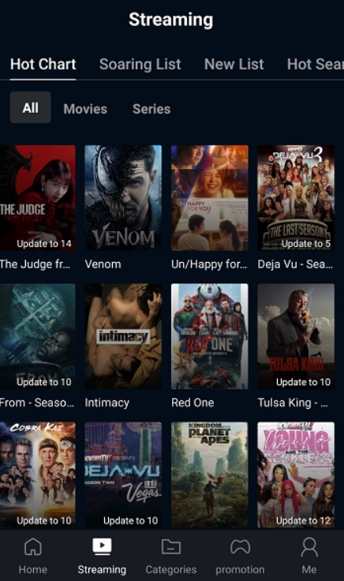
Utilisation de JADX
Pour y voir un peu plus clair dans ce qu’on fait, on va utiliser la
version graphique de jadx.
Elle permet de décompiler l'application et d'afficher facilement le
contenu de tous les fichiers.
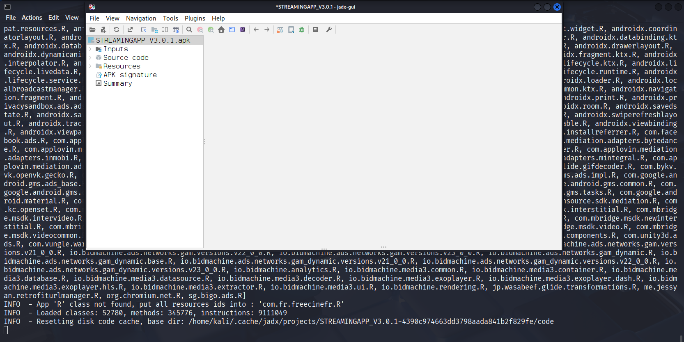
La décompilation a bien fonctionné.
On obtient une arborescence claire avec plusieurs sections :
- Inputs → Ce dossier contient le fichier APK chargé, ainsi que les fichiers .dex (ce sont les fichiers compilés utilisés par Android pour exécuter l'application).
- Source code → Le code Java/Kotlin reconstitué. Dans notre cas, l’application a été obfusquée, on verra ça un peu plus loin.
- Resources → Ce dossier contient notamment le fichier AndroidManifest.xml (qui liste les permissions), mais aussi d'autres répertoires comme res/, assets/, lib/, etc., ainsi que des fichiers de configuration.
- APK signature → C’est ici qu’on trouve les certificats utilisés pour signer l’APK. Ils servent notamment à identifier l’auteur de l’application (pratique pour vérifier qu’une application qu’on pense légitime l’est vraiment).
- Summary → Une vue d’ensemble de tout ce que JADX a pu extraire.
AndroidManifest.xml
La première chose qu’on peut aller fouiller, c’est le fichier
AndroidManifest.xml.
Ce fichier XML est obligatoire dans toute application
Android. Il contient des métadonnées essentielles sur l’application.
On y retrouve plein d’infos utiles :
les composants de l’application, les autorisations demandées, et les
fonctionnalités matérielles ou logicielles requises pour fonctionner
correctement.
(https://developer.android.com/guide/topics/manifest/manifest-intro?hl=fr)
Son rôle est à la fois descriptif et
exécutif.
En Reverse Engineering, c’est souvent le tout premier truc qu’on
regarde : il donne déjà pas mal d’indices sur ce que l’application
veut faire, ce qu’elle déclare… et parfois, sur ce
qu’elle essaie de cacher.
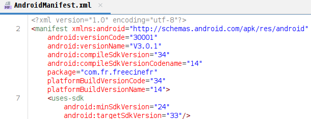
-
Le nom du package :
com.fr.freecinefr
→ C’est le nom unique de l’application. On peut s’en servir pour chercher des infos sur internet (il sert aussi d’identifiant sur le Play Store). -
Les versions d’Android ciblées :
→ L’app fonctionne à partir d’Android 7.0 (minSdk : 24) jusqu’à Android 13 (targetSdk : 33) - Elle a été compilée avec Android 14 (compileSdk : 34)
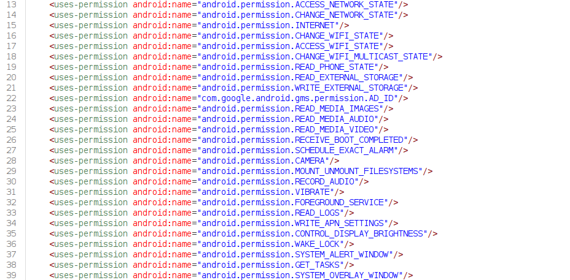
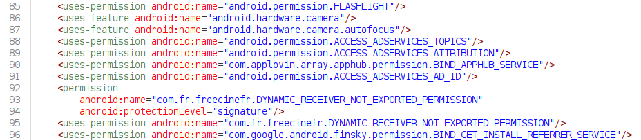
On va maintenant analyser et classer les permissions demandées par l’application :
Réseau et connectivité
| Permission | Signification |
|---|---|
| android.permission.INTERNET | Permet à l'application d'accéder à Internet. Indispensable pour les apps en ligne. |
| android.permission.ACCESS_NETWORK_STATE | Lire l'état du réseau (Wi-Fi, 4G, etc.). |
| android.permission.CHANGE_NETWORK_STATE | Modifier l'état de la connectivité réseau. Peu utilisé, parfois abusé. |
| android.permission.ACCESS_WIFI_STATE | Lire l'état du Wi-Fi : nom de réseau, signal, etc. |
| android.permission.CHANGE_WIFI_STATE | Activer/désactiver le Wi-Fi et le reconnecter automatiquement. |
| android.permission.CHANGE_WIFI_MULTICAST_STATE | Gérer les connexions multicast (souvent pour Chromecast, DLNA). |
| android.permission.WAKE_LOCK | Empêche l'appareil de se mettre en veille. Fréquent pour le streaming. |
| android.permission.FOREGROUND_SERVICE | Autorise les services visibles en tâche de fond (ex. : lecteur vidéo permanent). |
Stockage et fichiers
| Permission | Signification |
|---|---|
| android.permission.READ_EXTERNAL_STORAGE | Lire les fichiers stockés sur l’appareil. |
| android.permission.WRITE_EXTERNAL_STORAGE | Écrire ou modifier ces fichiers. |
| android.permission.READ_MEDIA_IMAGES | Lire les photos sur Android 13+. |
| android.permission.READ_MEDIA_AUDIO | Lire les fichiers audio. |
| android.permission.READ_MEDIA_VIDEO | Lire les vidéos locales. |
| android.permission.MOUNT_UNMOUNT_FILESYSTEMS | Monter ou démonter des partitions. Très rare et risquée, souvent considéré comme abus. |
Identité et système
| Permission | Signification |
|---|---|
| android.permission.READ_PHONE_STATE | Lire l’état du téléphone : IMEI, numéro, état de la SIM, etc. Très intrusif. |
| android.permission.GET_TASKS | Voir les apps en cours d’utilisation. Deprecated depuis Android 5. |
| android.permission.READ_LOGS | Lire les logs système. Permission très dangereuse, car expose d'autres apps. |
| android.permission.WRITE_APN_SETTINGS | Modifier les points d’accès mobile (APN). Rarement justifié. |
| android.permission.RECEIVE_BOOT_COMPLETED | Lancer l’app au démarrage du téléphone. |
| android.permission.SCHEDULE_EXACT_ALARM | Planifier des tâches très précises (souvent pour trackers, pubs, etc.). |
| android.permission.SYSTEM_ALERT_WINDOW | Afficher des fenêtres au-dessus des autres apps (ex. : pubs invasives). |
| android.permission.SYSTEM_OVERLAY_WINDOW | Similaire ci-dessus, doublon technique sur certains SDKs. |
| android.permission.CONTROL_DISPLAY_BRIGHTNESS | Changer la luminosité de l'écran. Très rare. |
Caméra / Micro / Capteurs
| Permission | Signification |
|---|---|
| android.permission.CAMERA | Accès à la caméra. |
| android.permission.RECORD_AUDIO | Accès au micro. |
| android.permission.FLASHLIGHT | Contrôle du flash LED. |
| android.permission.VIBRATE | Vibrations. |
Publicité et tracking
| Permission | Signification |
|---|---|
| com.google.android.gms.permission.AD_ID | Récupération de l'identifiant publicitaire Google. |
| android.permission.ACCESS_ADSERVICES_TOPICS | Nouveaux systèmes de pub contextuelle (Android 13+). |
| android.permission.ACCESS_ADSERVICES_ATTRIBUTION | Attribution de campagnes pub. |
| android.permission.ACCESS_ADSERVICES_AD_ID | Accès à un identifiant pub spécifique. |
| com.applovin.array.apphub.permission.BIND_APPHUB_SERVICE | Intégration avec AppLovin, réseau de pub mobile. |
| com.google.android.finsky.permission.BIND_GET_INSTALL_REFERRER_SERVICE | Récupération de la source d'installation (ex. clic pub). |
Permissions liées à freecine
| Permission | Signification |
|---|---|
| com.fr.freecinefr.DYNAMIC_RECEIVER_NOT_EXPORTED_PERMISSION | Permission interne spécifique à l’application, protégée par signature. Utilisée pour des communications internes ou pour renforcer l’isolation de certains composants. |
Les queries
Depuis Android 11, les applications ne peuvent plus interroger
librement le système pour savoir quelles autres applications sont
installées.
Elles doivent désormais déclarer explicitement à
l'avance quelles applications et quelles
actions elles veulent utiliser. L'objectif est de
protéger la vie privée de l'utilisateur, les applications ne peuvent
plus faire ce qu'elles veulent secrètement.
En gros, ce bloc de balises sert à annoncer les intentions de l'application concernant son utilisation d'autres applications ou services.
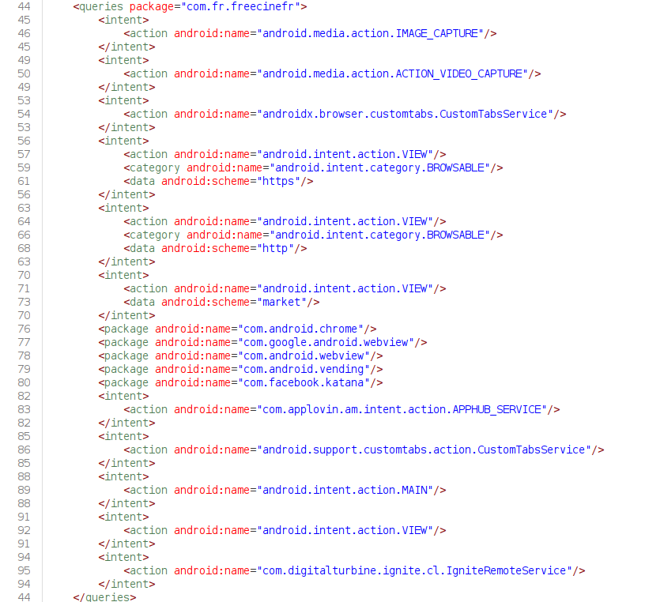
On remarque deux types de balises bien distincts :
- intent → "je cherche des applications capables de gérer cette action"
- package → "je veux savoir si telle application précise est installée"
Ces balises sont indépendantes, elles ne sont pas forcément liées entre elles.
Et quand on commence à analyser ce bloc… on tombe sur pas mal de trucs un peu douteux :
Les premiers intents :
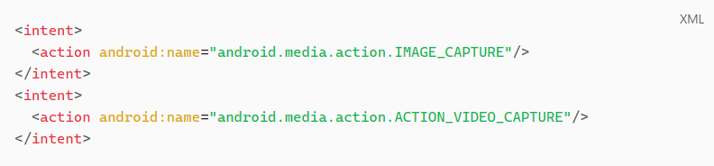
Permet à STREAMINGAPP
→ D'ouvrir une autre application qui gère la prise de photo ou la
capture de vidéo
→ D'obtenir la liste des applications installées capables de répondre
à cette action (Snapchat, Instagram, Whatsapp, Caméra, …)
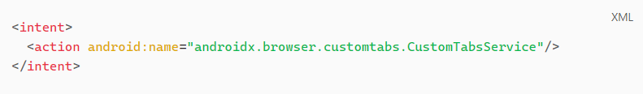
Permet à STREAMINGAPP
→ De lancer un navigateur web (Chrome par exemple)
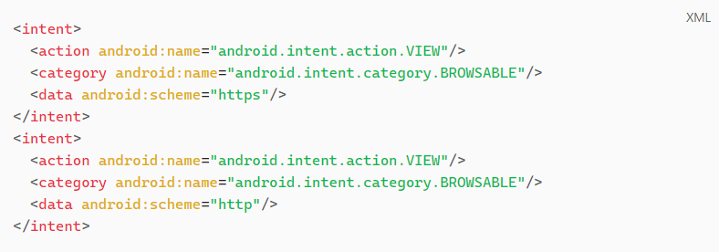
Permet à STREAMINGAPP
→ D'ouvrir un lien HTTPS (https://google.com) ou HTTP (http://…) via
un navigateur externe
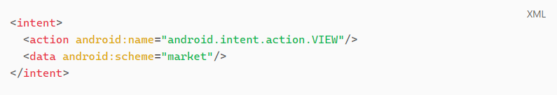
Permet à STREAMINGAPP
→ D'ouvrir des liens vers le Play Store
Et pour les packages
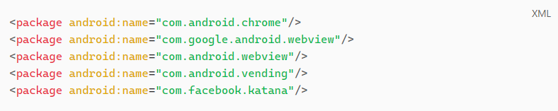
Ces lignes disent : Je veux que STREAMINGAPP puisse voir si ces applications sont installées sur le téléphone.
- com.android.chrome → Google Chrome
- com.google.android.webview → WebView maintenu par Google
- com.android.webview → WebView Android AOSP
- com.android.vending → Google Play Store
- com.facebook.katana → Application Facebook officielle
Le reste des intents
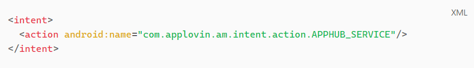
→ Cible un service spécifique au SDK AppLovin (pub
mobile) (https://en.wikipedia.org/wiki/AppLovin).
→ STREAMINGAPP peut lancer ou interroger ce service s'il est
disponible.
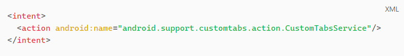
Permet à STREAMINGAPP
→ D'ouvrir un navigateur aussi (compatibilité versions plus anciennes)
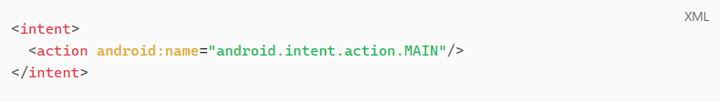
Permet à STREAMINGAPP
→ De voir quelles applications sont launchables depuis l'écran
d'accueil
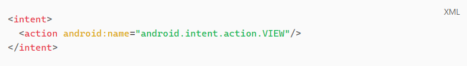
Permet à STREAMINGAPP
→ D'ouvrir des contenus (URLs, fichiers, …)
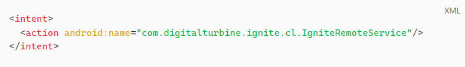
→ Cible Digital Turbine, un SDK de promotion d'apps
sponsorisées (https://www-globaldata-com.translate.goog/company-profile/digital-turbine-inc/?_x_tr_sl=en&_x_tr_tl=fr&_x_tr_hl=fr&_x_tr_pto=rq).
→ Permet à STREAMINGAPP de communiquer avec ce service s’il est
installé ou intégré.
Publicités et trackers cachés
Je ne pense pas prendre de risques en disant que les services gratuits se financent très souvent en revendant nos données personnelles aux publicitaires. C'est un modèle qu'on a implicitement accepté maintenant.
C'est devenu tellement courant qu'on n'y pense même plus. On l'a
accepté sans se rendre compte que c'était une atteinte à notre vie
privée.
(Comme on peut souvent entendre "je n'ai rien à cacher donc osef"
(spoil : on y reviendra dans un autre article))
Quand une application "légitime" collecte nos
données, elle est censée respecter un cadre légal.
Par exemple, en Europe, il y a le RGPD. Ce n'est pas parfait, mais il
existe. Et parfois, certaines entreprises sont condamnées à des
amendes quand elles abusent trop (même si c'est plus complexe que ça).
(Tiktok condamné à une amende de 530 millions d'euros dans l'UE
pour avoir enfreint le RGPD (2 mai 2025))
Tout (ou presque :-) ) est régulé et surveillé afin d'éviter les dérives. On peut se demander si ça change quelque chose, mais dans l'idée, on pourrait toujours se protéger avec la loi si nos droits étaient bafoués.
Dans le cas d'une application illégitime, la publicité peut poser des problèmes bien plus graves qu'on ne l'imagine. Ce n'est plus simplement du ciblage publicitaire, mais un danger pour l'utilisateur (réseaux publicitaires douteux, redirections malveillantes, fuites massives de données personnelles).
C'est pourquoi il est essentiel de revenir à une question de base : à qui confie-t-on nos informations ?
Même les applications legit ne respectent pas toujours nos données. Certaines pratiques sont discutables. Mais dans ce cadre, on reste dans un système où on peut faire valoir ses droits et espérer un minimum de contrôle.
Quid des applications qui dès le départ, ne respectent pas la loi ?
Ici, STREAMINGAPP enfreint déjà un grand nombre de règles, en proposant gratuitement du contenu normalement payant. Elle ne respecte pas les droits d'auteur, viole les conditions d'utilisation des services qu'elle usurpe, et opère en totale illégalité.
La question est légitime : peut-on lui faire confiance pour respecter nos données personnelles ?
Petit début d'analyse de la balise <application>
Cette balise est le point d’entrée principal de toute application Android. Elle contient des paramètres de configuration, les composants utilisés (comme des services), et pas mal de métadonnées (comme celles liées à la pub ou aux trackeurs).
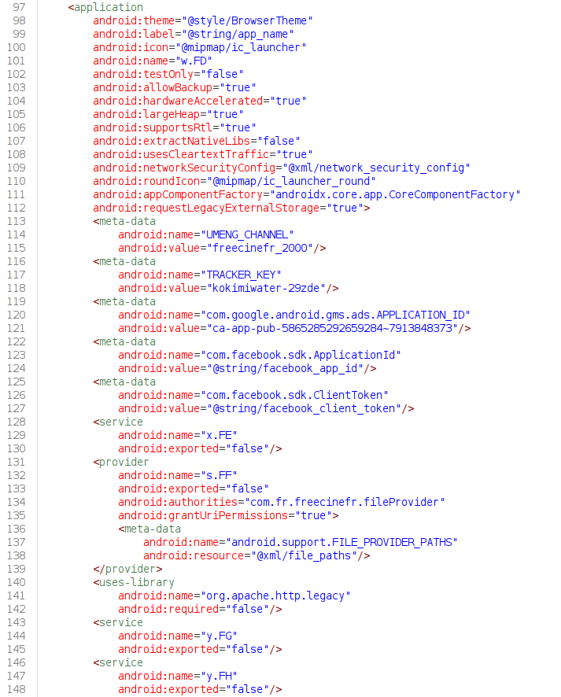
Les premières lignes n’ont rien d’anormal. Mais un truc attire quand même l’attention à la ligne 101 : le champ android:name="w.FD". → Ce nom est obfusqué. Et c’est rarement un bon signe, certaines applications malveillantes utilisent ce genre de technique pour cacher du code douteux.
Autre point important à relever :
La ligne 112 avec
android:requestLegacyExternalStorage="true".
Cet attribut donne à STREAMINGAPP
un accès quasi complet au stockage externe du
téléphone.
→ Donc photos, musiques, documents, téléchargements.. tout.
La vraie question, c’est pourquoi STREAMINGAPP a
besoin d’un tel accès ? :-)
On pourrait imaginer que c’est pour stocker les films temporairement
en cache, ou pour permettre à l’utilisateur de les télécharger dans un
dossier accessible. Mais soyons honnêtes : vu la présence de
trackeurs publicitaires dans l’application, on doute
un peu de ses bonnes intentions.
D’autant plus qu’il existe des alternatives bien plus propres, comme
l’API MediaStore (https://developer.android.com/training/data-storage/shared/media?hl=fr), qui gère ça en protégeant mieux l’utilisateur.
Les métadonnées
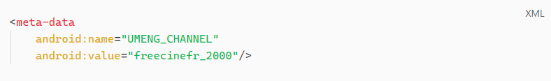
→ UMeng est une plateforme chinoise d’analytics
légitime.
Elle collecte des données : localisation, type d’appareil, usage de
l’app… mais aussi des infos sur les performances (nombre d’ouvertures,
durée d’utilisation, etc.).
C’est souvent utilisé par des applications
hors Play Store, ou issues de
stores asiatiques.
→ Le champ freecinefr_2000 indique le canal de
distribution, il sert à UMeng pour savoir d’où vient l’utilisateur
(ici : téléchargement via un canal non officiel).
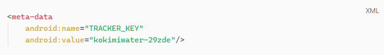
→ Ici, on est sur du tracking personnalisé, mais non documenté.
→ Aucune information trouvée sur
kokimiwater-29zde dans mes recherches, ce qui n’est
pas très rassurant.
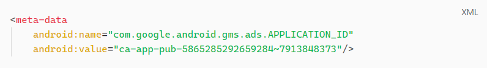
→ C'est un identifiant légitime du
Google Mobile Ads SDK.
→ ca-app-pub est le format officiel pour la publicité
Google (https://developers.google.com/admob/android/test-ads?hl=fr).
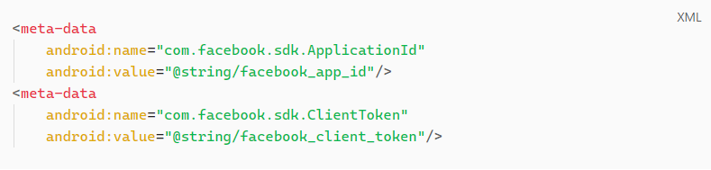
→ Utilisé par Facebook SDK.
→ Ça permet de se connecter avec le
login Facebook (Gros WARNING ici, une application non
vérifiée qui permet de se connecter avec un service légitime, elle
pourrait potentiellement récupérer nos identifiants de connexion en
même temps)
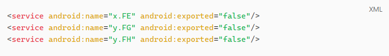
→ Des services obfusqués.
→ Ça ne veut pas forcément dire que c’est malveillant… mais
l’obfuscation est aussi utilisée pour
cacher des comportements douteux.
L’obfuscation n’est pas mauvaise par défaut.
Elle peut servir à protéger une application légitime contre la copie
ou les attaques (notamment le repackaging malveillant).
Mais dans le cas d’une application non vérifiée, téléchargée via
Telegram, l’obfuscation devient un outil parfait pour dissimuler des
trucs pas nets.
Elle peut aussi servir à éviter les détections par les antivirus.
Ici, l'application abuse des permissions, n'est pas signée officiellement, utilise des trackers obscurs et propose du contenu volé, ça fait pas mal de red flags.
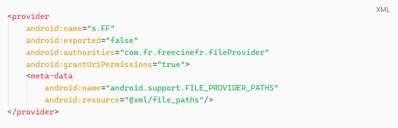
→ FileProvider est un mécanisme Android pour partager
des fichiers entre applis.
→ L’attribut android:exported="false" signifie que ce
partage n’est pas ouvert par défaut aux autres applications.
→ À première vue, c’est donc plutôt positif côté sécurité.
Mais si on regarde de plus près le champ android:resource="@xml/file_paths", on voit que ce FileProvider est relié à un fichier XML.
Et c’est là que ça commence à devenir vraiment intéressant :
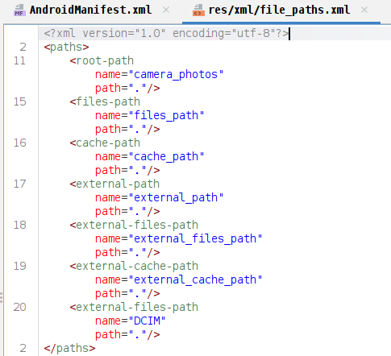
| Balise | Dossier réel concerné | Ce que ça donne à l'app |
|---|---|---|
| root-path | / (racine système) → parfois non-fonctionnel sans root | Très dangereux si actif |
| files-path | /data/data/<package>/files/ | Accès aux fichiers internes privés de l'app |
| cache-path | /data/data/<package>/cache/ | Accès au cache interne |
| external-path | /sdcard/ ou /storage/emulated/0/ | Accès complet au stockage partagé |
| external-files-path | /sdcard/Android/data/<package>/files/ | Espace externe privé à l'app |
| external-cache-path | /sdcard/Android/data/<package>/cache/ | Idem, mais pour le cache |
| external-files-path name="DCIM" | /sdcard/DCIM/ (appareils photo) | Accès aux photos de l’utilisateur |
L'application peut générer un lien vers n'importe quel fichier dans TOUT le stockage. Photos, téléchargements, vidéos, et même les fichiers systèmes (si le téléphone est rooté).
En utilisant grantUriPermissions, elle peut partager ces fichiers avec d'autres applications ou les envoyer à un serveur distant.
Si on le couple avec requestLegacyExternalStorage="true", c'est un aspirateur à fichiers personnels.
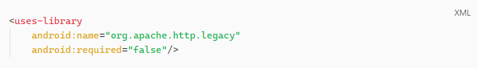
→ L'application utilise une version dépréciée de la librairie
Apache HTTP Client (abandonnée depuis
Android 6 (2015)).
→ Cette librairie sert à faire des requêtes HTTP, mais elle est connue
pour avoir pas mal de failles, notamment la possibilité de
contourner SSL/TLS (protocoles en charge de chiffrer
les communications).
→ Dans notre cas, ça veut dire qu'il serait
clairement possible de
contourner le chiffrement… et donc d'exfiltrer les
données sensibles.
À ce stade, on commence à comprendre que le reste du fichier AndroidManifest.xml ne va pas vraiment améliorer la situation côté respect de la vie privée. Plutôt étrange pour une application qui est censée juste divertir, non ?
Et encore, on peut aussi parler de la quantité astronomique de services publicitaires..
| Service | Description |
|---|---|
| Google Mobile Ads (AdMob) | Plateforme publicitaire de Google, très répandue sur Android. Gère les bannières, interstitiels, pubs vidéo. |
| Facebook Ads & SDK | Permet de diffuser des publicités ciblées via le réseau Facebook et de suivre les événements utilisateurs. |
| InMobi | Acteur majeur du marché asiatique, spécialisé dans la publicité mobile programmatique. |
| BidMachine | Plateforme DSP/RTB permettant l’achat en temps réel de publicités mobiles, souvent intégrée via des intermédiaires. |
| IronSource | Propose des formats riches comme les interstitiels et vidéos récompensées, surtout utilisé dans les jeux. |
| Unity Ads | SDK publicitaire intégré à Unity, très utilisé dans les jeux pour afficher des pubs immersives. |
| ByteDance / TikTok Ads | SDK de publicité mobile de ByteDance (maison mère de TikTok), utilisé pour le tracking et le retargeting. |
| Vungle | Fournisseur de pubs vidéo interactives, souvent utilisé dans les apps gratuites à forte monétisation. |
| Bigo Ads | Régie liée à BIGO Live, acteur asiatique proposant du display et de la vidéo publicitaire. |
| Fyber | Plateforme de monétisation et médiation, intégrée dans de nombreuses apps pour optimiser les revenus publicitaires. |
| ExploreStack | Fournisseur de solutions publicitaires mobiles, notamment sur la publicité native et le display. |
| AppLovin | Très grosse plateforme de monétisation mobile, regroupe plusieurs services liés à la pub, la data et l’analytics. |
| MBridge (anciennement Mintegral) | Propose des outils de publicité programmatique et des analytics, avec des pratiques parfois controversées. |
Alors… Doit-on se sentir rassuré avec une application comme celle-là installée sur son téléphone ?
Elle diffuse du contenu piraté, possède des dizaines de services
tiers, collecte énormément de données (bien plus que nécessaire) et
tout ça sans aucun cadre légal.
Ce n'est pas juste une application “douteuse”, c'est une boîte noire,
avec des intentions floues, un comportement imprévisible, qui profite
de la crédulité des utilisateurs tombés au hasard sur une vidéo TikTok
d'un influenceur qui n'y connaît rien (ou alors.. Complice ? 🤔)
Ce n'est pas juste une histoire de publicités ou de pop-up en boucle.
C'est une histoire de perte totale de contrôle.
À partir du moment où une application fonctionne hors des règles, plus rien ne garantit que ce qu'elle fait avec vos données soit limité, transparent ou même correct.
Conclusion
Le Reverse Engineering est une méthode d’analyse technique
redoutablement efficace.
Elle permet de voir au-delà de l’interface, et de comprendre ce que
fait réellement une application, dans ses moindres recoins.
Dans le cas de STREAMINGAPP, on met en lumière une série de pratiques douteuses, une architecture obscurcie, et un fonctionnement qui soulève beaucoup trop de questions.
Télécharger une application en dehors des stores officiels, c'est
toujours prendre un risque.
Ce type d'application peut contenir du code malveillant, abuser de
permissions ou même transmettre vos données à des serveurs situés à
l'autre bout du monde sans jamais vous informer.
Et ce n'est pas parce qu'elle fonctionne, ou que la personne qui va la proposer a l'air gentille/sympathique, qu'elle est inoffensive. Certaines applications ne cherchent pas à vous divertir, mais à vous profiler, vous tracer et vous exploiter.
On pense télécharger une application pour regarder un film
tranquillement à la maison, on installe en réalité un outil
d'espionnage qui s'infiltre dans notre téléphone, lit nos fichiers,
observe nos habitudes, vend nos données (parfois à des personnes peu
scrupuleuses..).
Le tout pour un film gratuit.
Ce que révèle ce type d'analyse, c'est qu'une APK douteuse, ce n'est pas juste illégal, c'est dangereux.
Aujourd'hui, votre téléphone contient toute votre vie.
Soyez exigeant avec ce que vous y installez.